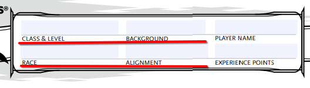

| Etapa de Creație al unui Caracter | |
| De Zaruri & Balauri, | 14.02.2025 |
Dungeons and Dragons este un joc de masă jucat cu creion pe hârtie. Fiecare jucător (cu excepția dirijorului) vor participa prin completarea unei fișe (prima din cele 3, restul sunt opționale).
Aceasta poate fi completată direct prin pdf-ul inclus mai jos, însă trebuie reținut că ce este scris cu imprimanta nu poate fi șters cu radiera (fișa este modificată pe parcursul jocului), așadar variable precum nivelul, hp-ul, etc nu vor fi completate.
Completarea acestei fișe nu este ușoară și necesită atenție pentru a nu te pierde în detalii. Cea mai simplă metodă este prin urmărirea unui ghid cu pași.
|  | 1.Specia, Profesia, Originea și Moralitatea. |
| Pentru a găsii lista cu fiecare opțiune valabilă pentru versiunea actuală a jocului, căutați pe net sau cumpărați cartea fizică "DnD5e Players Handbook" |